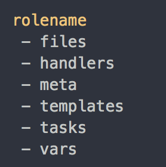
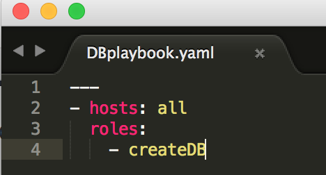

By Faster than Light
Ansible allows automation and configuration management for numerous hosts.
It’s a simple automation language that can perfectly describe an IT application infrastructure in Ansible Playbooks. It’s an automation engine that runs Ansible Playboos Ansible Tower by Red Hat is an enterprise framework for controlling, securing and managing your Ansible Automation withe a UI and restful API
Ansible is composed of some tools such as:
Modules and playbooks are the actually code that gets run on different hosts
ansible-playbook playbook.yml
$ansible localhost -m ping
$ansible localhost -a ls
ansible-vault [create|decrypt|edit|encrypt|rekey|view] vault_file.yml
; /etc/ansible/hosts
[my-awesome-site:children]
webservers
databases
[webservers]
main ansible_host=74.125.21.100 ;named entry
www.example.com ;simple domain name
[databases]
db.example.com
backup.example.com
We need to install the package "nginx" on all of our servers
We can do this by running:
ansible all -s -m shell -a 'apt-get install nginx' "
We have just ran a task. Ansible also allows combining different tasks into a taskfile, which will itself be part of a "Role". A Role will have the taskfile and all its related files. (more on this later)
However, we could probably have done the same thing with a bash script. What sets ansible apart is the ability to ensure idempotence (same final result).
Running
ansible all -s -m apt -a 'pkg=nginx state=installed update_cache=true'
will also install nginx on all of our servers.
The response from ansible will be:
127.0.0.1 | success >>
{
"changed": false
}
Note that this will also ensure idempotence. Note that we used the ansible module 'apt' to accomplish this. Modules are an essential part of ansible.
We can write the following taskfile for our "createDB" role:
Recall that the structure of a role looks like this:
When we run the role, Ansible will automatically run the "main.yml" taskfile in that role.
To run our role, we need to create a playbook file which calls our role, running our taskfile.
Playbook files are in the .yml format, and can call multiple roles. Here is one which will call our "createDB" role. Assume that the following playbook file is "DBplaybook.yml
We now simply run:
"ansible-playbook DBplaybook.yml"
And the database will be set up on all of our servers!
-Adding users to databases
-Managing services on servers
-Deploying applications to servers
-Running application scripts on servers
The competitors of Ansible include:
Ansible users write playbooks in a descriptive language similar to YAML and Jinja. Users may prefer to use a competitor that uses a language they know, or that is coded in a more procedural style. For example, Terraform uses Go, and Puppet uses Ruby.
Ansible is often preferred because it uses client-only architecture. Many of its competitors, including Chef, SaltStack, and Puppet, use client-server architecture. However, there are two competitors, CloudFormation and Terraform, that also offer client-only architecture. Ansible is flexible and can be used either as push-based or pull-based system.
Ansible was first written for use in command line only. Unfortunately, this remains relevant, because the majority of functionality available in the command line is not available from the user interface.
Ansible is one of the newer configuration management tools, and some of its more established competitors, like Chef, offer greater stability. Chef and Puppet users will benefit from a larger user and developer communities.
Ansible nodes are managed by default over SSH. SSH communication can face reduced speed in a scaled or downsized environment. Furthermore, although Ansible uses an agentless architecture, machines must have a Python interpreter installed and require root SSH access for most functionality.
#this uses the module 'ping' on localhost
$ansible localhost -m ping
#this allows a single command to be run
$ansible localhost -a 'ls -al'
---
# test-playbook.yml
- hosts: all
tasks:
-